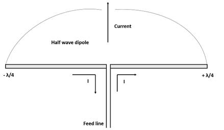

The dipole antenna or dipole aerial is one of the most
important forms of RF antenna. The dipole can be used on its own, or it can
form part of a more complicated antenna array.
The dipole aerial or antenna is widely used on its own, but
it is also incorporated into many other RF antenna designs where it forms the
radiating or driven element for the overall antenna.
The dipole is relatively simple in its basic implementation and many of the basic calculations are quite straightforward. It is easy to design a basic dipole antenna that will operate on the HF, VHF and UHF sections of the radio frequency spectrum. That said, in depth mathematical analysis can require more complicated mathematical methods.
A dipole antenna is a straight electrical conductor measuring half wavelength from end to end and connected at the center to a radio-frequency (RF) feed line. This antenna, also called a doublet, is one of the simplest types of antenna, and constitutes the main RF radiating and receiving element in various sophisticated types of antennas. The dipole is inherently a balanced antenna, because it is bilaterally symmetrical.

The name 'di-pole' indicates that the dipole antenna consists of two poles or items – two conductive elements. Current flows in these two conductive elements and the current and the associated voltage causes an electromagnetic wave or radio signal to be radiated outwards from the antenna.
The length of the radiating elements determine many of the
properties of the dipole antenna: its feed impedance, centre
operating frequency, whether it is a resonant antenna, etc..
As such the dipole length is an important aspect of the dipole antenna
parameters.